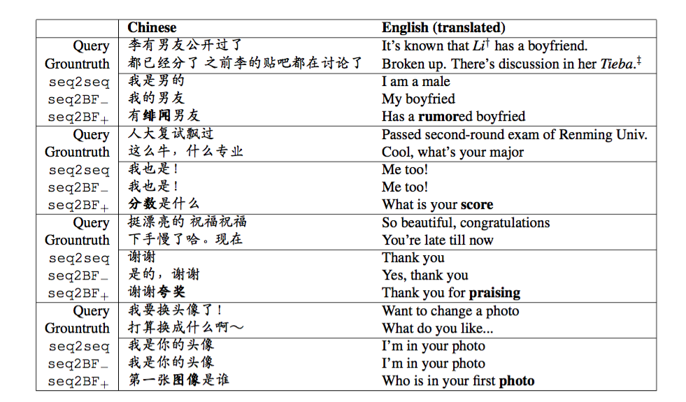

Sequence to Backward and Forward Sequences: A Content-Introducing Approach to Generative Short-Text Conversation #PaperWeekly#
从今天开始后面的paper都与bot有关，除非arXiv刷出一些好玩的paper。本文是Sequence to Backward and Forward Sequences: A Content-Introducing Approach to Generative Short-Text Conversation，2016年7月4日发在arxiv上，作者是来自北京大学的博士生Lili Mou。
这里所讲的bot是指chat bot，也是当下研究领域最火的应用之一。在实际的工程应用中使用的方法可以分为两类，基于rule、template的和基于database query的，应用范围比较窄，比如垂直领域的客服机器人，解决的问题通常都是一个闭域的问题；而真正的AI是应该可以解决开域问题的，无论问什么样的问题，都会得到一个满意的答案，当然，现在的研究水平还难以达到这样的境界。最近几年随着深度学习技术的火热，nlp领域中很多任务都得到了长足的进步，现在最流行的解决方案是seq2seq，尤其是在自然语言生成任务中得到了广泛的应用。简单bot的问题可以理解为给定一个query，生成一个reply，这样的bot是single turn，研究意义大于应用意义。更多的实际问题都是一个multi turn问题，以客服bot为例，单轮对话很难解决了客户的疑问，一般都是通过多轮对话来帮助用户得到满意的答复。关于多轮bot的文章，后面会慢慢涉及到，今天分享的paper是关于单轮、短文本的对话生成。
生成式的bot比起基于rule、template和database query的bot具有更加灵活的特点，不仅仅拘泥于现有的rule、template和database，而是可以生成更加多样性的reply。但生成式的bot也有一个非常显著的问题，就是经常生成一些非常“呵呵”的reply，比如“我不知道”，“我也是”等等没有营养但绝对“安全”的话，导致了这种bot没有什么实用价值。产生这个问题可能有两个原因：一是在decoder部分以log概率最大为目标，而不是别的目标，所以容易生成一些没有意义的人类语言，因为训练语料中这样无意义的reply会经常出现，用deep learning从data中抓feature的时候就会出现这样的问题；二是query的信息量太少，encoder捕捉的意思有限，导致了生成“呵呵”的reply。
本文旨在提出一种叫做content introducing的方法来生成短文本reply，一共分为两个step，如下图：

step 1 给定query之后，预测一个keyword作为reply的topic，这个topic词性是名词，这里的keyword并不能捕捉复杂的语义和语法，而只是根据query的每个词来预估出一个PMI（Pointwise Mutual Information）最高的名词作为keyword，两个单词之间的PMI由下式计算：
每个单词与query之间的PMI由下式计算：

虽然数学上不太严谨，但后面的实验表明用这个来计算结果还是不错的。
step 2 本文的模型叫做Sequence To Backward and Forward Sequences，首先进行backward step，给定一个query，用encoder表示出来得到一个context，decoder的部分首先给定keyword作为第一个词，然后进行decoding，生成的这部分相当于keyword词前面的部分；接下来进行的是forward step，也是一个典型的seq2seq，用encoder将query表示成context，然后给定backward生成的话和keyword作为decoder的前半部分，继续decoding生成后半部分。整个的流程这样简单描述下：
query + keyword => backward sequence
query + keyword + backward sequence(reverse) => forward sequence
reply = backward (reverse) sequence + keyword + forward sequence
传统的seq2seq模型都是从第一个词生成到最后一个词，无法生成指定词，而本文的模型可以生成指定词，并且该词可以出现在reply的任意位置。
数据集是从百度贴吧上爬下来的对话数据，规模有500k的query reply pairs，PMI统计是由100M的query reply paris。结果是与seq2seq进行比较，本文模型得到了更好的结果。下图展示了本文的example：

本文用keyword来做topic的思路是一个很好的思路，会让算法生成的reply更加有营养，这个在单轮的应用背景下可以取得不错的结果。但是本文用topic的思路和处理方法太多简单，如果考虑到多轮对话的问题，我想用上下文信息来预测topic，而不是只考虑该句query的信息，而且不仅仅用一个单词来做topic，可能还会是短语，也可能是语义层面上的topic，而不仅仅是从一个候选列表中选择单词来作为topic。文章的思路很有启发性，我个人认为生成式的bot在闭域中应用是一个大趋势，传统的rule、template、database都会被替代，但真实应用场景中的bot需要将context做好处理，然后作为先验知识，来生成reply。其实难点也就在context的处理上，包括user profile，dialogue history，user current state等等各种context信息。
一点思考，欢迎交流。